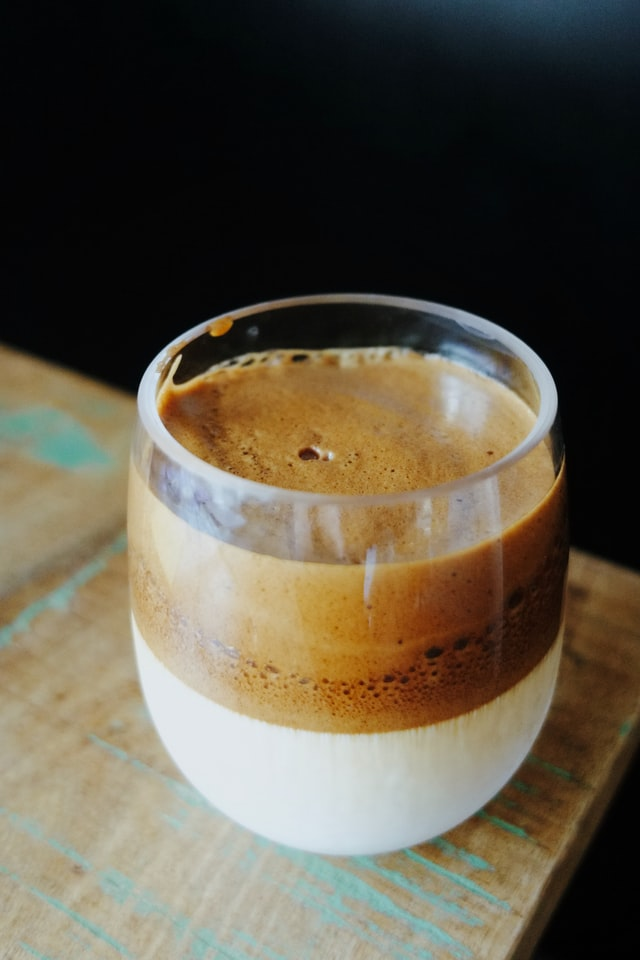

Back to Odin Recipes - Home
Dalgona Coffee

Description
Photo by Josh Johnson
on Unsplash
At the beginning of the quarantine season, everyone seemed to try this. Here's a non-fussy way to attempt this drink.
Recipe credit to Jane Kim on Allrecipes.com.
Ingredients
- 2 Tbsp boiling water
- 2 Tbsp instant coffee
- 2 Tbsp white sugar
- 1 cup whole milk
Steps
- Step 1: Whisk boiling water, instant coffee, and sugar together until coffee is dissovled.
- Step 2: Continue to whisk until mixture becomes thick and forms a peak, 2 to 3 minutes.
- Step 3: Pour milk into a glass. Pour frothy coffee mixture on top of milk.